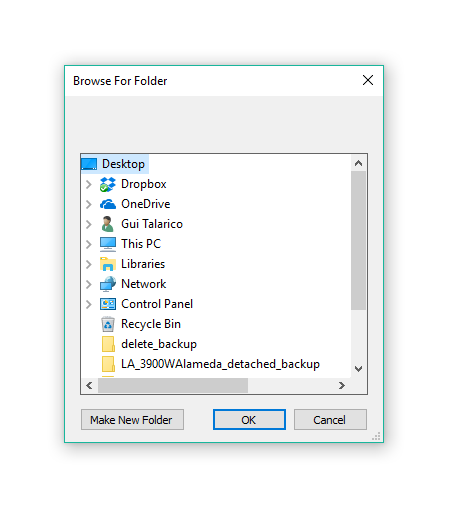
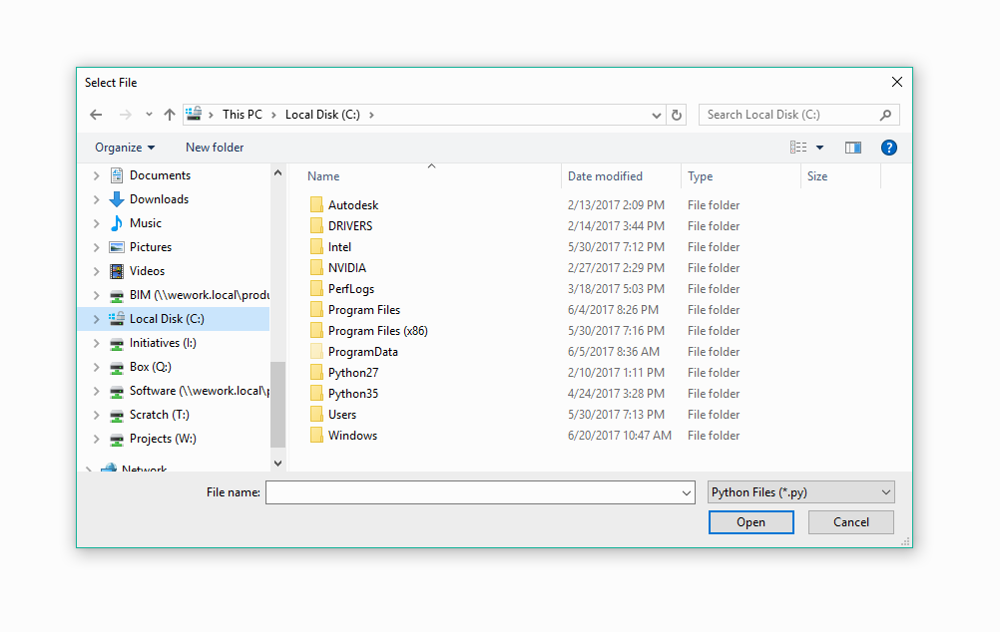

Forms¶
The forms module provide several pre-build forms as well as a framework from which you can build your own forms.
QuickForms¶
SelectFromList¶

-
rpw.ui.forms.SelectFromList(title, options, description=None, sort=True, exit_on_close=True)¶ Simple FlexForm wrapped function with ComboBox and button
Parameters: - title (str) – Title of form
- options (dict,list[str]) – Dictionary (string keys) or List[strings]
- description (str) – Optional Description of input requested [default: None]
- sort (bool) – Optional sort flag - sorts keys [default: True]
- exit_on_close (bool) – Form will call sys.exit() if Closed on X. [default: True]
- Usage:
>>> value = SelectFromList('Test Window', ['1','2','3']) >>> # Dropdown shows '1', '2' ,'3'. User clicks Select '1' >>> print(value) '1' >>> # Dictionary >>> value = SelectFromList('Test Window', {'Text':str, 'Number':int}) >>> # User clicks Text >>> print(value) str
TextInput¶

-
rpw.ui.forms.TextInput(title, default=None, description=None, sort=True, exit_on_close=True)¶ Simple FlexForm wrapped function with TextBox and button
Parameters: - title (str) – Title of form
- default (str) – Optional default value for text box [default: None]
- description (str) – Optional Description of input requested [default: None]
- exit_on_close (bool) – Form will call sys.exit() if Closed on X. [default: True]
- Usage:
>>> value = TextInput('Title', default="3") >>> print(value) 3
TaskDialogs¶
Alert¶

-
class
rpw.ui.forms.Alert(message, title=’Alert’, heading=”, exit=False)¶ A Simple Revit TaskDialog for displaying quick messages
-
__init__(message, title=’Alert’, heading=”, exit=False)¶ Parameters: - message (str) – TaskDialog Message
- title (str, optional) – TaskDialog Title
- heading (str, optional) – TaskDialog Message Heading
- exit (bool, optional) – Exit Script after Dialog. Useful for displayin Errors. Default is False
- Usage:
>>> Alert('Your Message', title="Title", heading="Some Heading") >>> Alert('You need to select Something', exit=True)
-
OS Dialogs¶
Select Folder¶
-
rpw.ui.forms.select_folder()¶ Selects a Folder Path using the standard OS Dialog. Uses Forms.FolderBrowserDialog(). For more information see: https://msdn.microsoft.com/en-us/library/system.windows.forms.openfiledialog.
>>> folderpath = select_folder() 'C:\folder\path'
Select File¶
-
rpw.ui.forms.select_file(extensions=’All Files (*.*)|*.*’, title=’Select File’, multiple=False, restore_directory=True)¶ Selects a File Path using the standard OS Dialog. Uses Forms.OpenFileDialog https://msdn.microsoft.com/en-us/library/system.windows.forms.filedialog.filter
>>> filepath = select_file('Revit File ('*.rvt)|*.rvt') 'C:\folder\file.rvt'
Parameters: - extensions (str, optional) – File Extensions Filtering options. Default is All Files (.)|*.*
- title (str, optional) – File Extensions Filtering options
- multiple (bool) – Allow selection of multiple files. Default is False
- restore_directory (bool) – Restores the directory to the previously selected directory before closing
Console¶

REPL Console for Inspecting Stack
>>> from rpw.ui.forms import Console
>>> Console()
# Console is launched with locally defined variables injected into context.
- Keyboard Shortcuts:
UPIterate history upDownIterate history downTabIterate possible autocomplete options
Note
The last stack frame is automatically injected is the context of the evaluation loop of the console: the local and global variables from where the Console was called from should be available.
Inspection of the stack requires stack frames to be enabled.
If an exception is raised stating `object has no attribute '_getframe'
it means IronPython stack frames is not enabled.
You can enable it by running with the -X argument:
ipy.exe -X: FullFrames file.py.
If you are trying to use it from within Dynamo, stack inspection is currently not available due to how the engine is setup, but you can still use it by manually passing the context you want to inspect:
>>> Console(context=locals()) # or
>>> Console(context=globals())
-
class
rpw.ui.forms.Console(stack_level=1, stack_info=True, context=None)¶
FlexForm¶
-
class
rpw.ui.forms.FlexForm(title, components, **kwargs)¶ Flex Form Usage
>>> components = [Label('Pick Style:'), ComboBox('combobox1', {'Opt 1': 10.0, 'Opt 2', 20.0}), Label('Enter Name:'), TextBox('textbox1', Text="Default Value"), CheckBox('checkbox1', 'Check this'), Separator(), Button('Select')] >>> form = FlexForm('Title', components) >>> form.show() >>> # User selects `Opt 1`, types 'Wood' in TextBox, and select Checkbox >>> form.values {'combobox1': 10.0, 'textbox1': 'Wood', 'checkbox': True}

FlexForm Controls¶
-
class
rpw.ui.forms.Label(label_text, **kwargs)¶ Windows.Controls.Label Wrapper
>>> Label('Label Text')
-
class
rpw.ui.forms.TextBox(name, **kwargs)¶ Windows.Controls.TextBox Wrapper
>>> TextBox()
-
class
rpw.ui.forms.CheckBox(name, checkbox_text, **kwargs)¶ Windows.Controls.Checkbox Wrapper
>>> CheckBox('Label')
-
class
rpw.ui.forms.ComboBox(name, options, **kwargs)¶ Windows.Controls.ComboBox Wrapper
>>> ComboBox({'Option 1': Element, 'Option 2', 'Elemnet'})
-
class
rpw.ui.forms.Separator(**kwargs)¶ WPF Separator
-
class
rpw.ui.forms.Button(button_text, **kwargs)¶ Windows.Controls.Button Wrapper
>>> Button('Select')
Implementation¶
FlexForm
from itertools import count
from rpw.utils.dotnet import Enum
from rpw.ui.forms.resources import *
class FlexForm(Window):
"""
Flex Form Usage
>>> components = [Label('Pick Style:'),
ComboBox('combobox1', {'Opt 1': 10.0, 'Opt 2', 20.0}),
Label('Enter Name:'),
TextBox('textbox1', Text="Default Value"),
CheckBox('checkbox1', 'Check this'),
Separator(),
Button('Select')]
>>> form = FlexForm('Title', components)
>>> form.show()
>>> # User selects `Opt 1`, types 'Wood' in TextBox, and select Checkbox
>>> form.values
{'combobox1': 10.0, 'textbox1': 'Wood', 'checkbox': True}
"""
layout = """
<Window
xmlns="http://schemas.microsoft.com/winfx/2006/xaml/presentation"
xmlns:x="http://schemas.microsoft.com/winfx/2006/xaml"
xmlns:d="http://schemas.microsoft.com/expression/blend/2008"
xmlns:mc="http://schemas.openxmlformats.org/markup-compatibility/2006"
xmlns:local="clr-namespace:WpfApplication1" mc:Ignorable="d"
ResizeMode="NoResize"
WindowStartupLocation="CenterScreen"
Topmost="True"
SizeToContent="WidthAndHeight">
<Grid Name="MainGrid" Margin="10,10,10,10">
</Grid>
</Window>
"""
def __init__(self, title, components, **kwargs):
"""
Args:
title (``str``): Form Title
components (``list``): List of Form Components.
top_offset (``float``): Optional top offset.
options (``kwargs``): WPF Parameters Options
Attributes:
values (``dict``): Dictionary of selected values
"""
self.ui = wpf.LoadComponent(self, StringReader(self.layout))
self.ui.Title = title
self.values = {}
for key, value in kwargs.iteritems():
setattr(self, key, value)
for n, component in enumerate(components):
self.MainGrid.Children.Add(component)
if hasattr(component, 'on_click'):
component.Click += component.on_click
V_SPACE = 5
if n > 0:
prev_comp = components[n - 1]
top = prev_comp.Margin.Top + prev_comp.Height + V_SPACE
top += getattr(component, 'top_offset', 0)
component.Margin = Thickness(0, top, 0, 0)
def show(self):
"""
Initializes Form. Returns ``True`` or ``False`` if form was exited.
"""
return self.ShowDialog()
@staticmethod
def get_values(sender, e):
""" Default Get Values. Collect values from controls and close """
component_values = {}
window = Window.GetWindow(sender)
for component in window.MainGrid.Children:
try:
component_values[component.Name] = component.value
except AttributeError:
pass
window.values = component_values
window.close()
def close(self):
""" Exits Form. Returns ``True`` to ``show()`` method """
self.DialogResult = True
self.Close()
class RpwControlMixin():
""" Control Mixin """
_index = count(0)
def __init__(self, **kwargs):
self.set_attrs(**kwargs)
def set_attrs(self, **kwargs):
""" Parses kwargs, sets default values where appropriate. """
self.index = next(self._index) # Counts Instatiation to control Height
# Default Values
control_type = self.__class__.__name__
if not self.Name:
self.Name = kwargs.get('Name', '{}_{}'.format(control_type, self.index))
self.Width = kwargs.get('Width', 300)
self.Height = kwargs.get('Height', 25)
h_align = Enum.Parse(HorizontalAlignment, kwargs.get('h_align', 'Left'))
self.HorizontalAlignment = h_align
v_align = Enum.Parse(VerticalAlignment, kwargs.get('v_align', 'Top'))
self.VerticalAlignment = v_align
# Inject Any other Custom Values into Component
# Updating __dict__ fails due to how .NET inheritance/properties works
for key, value in kwargs.iteritems():
setattr(self, key, value)
class Label(RpwControlMixin, Controls.Label):
"""
Windows.Controls.Label Wrapper
>>> Label('Label Text')
"""
def __init__(self, label_text, **kwargs):
"""
Args:
label_text (``str``): Label Text
wpf_params (kwargs): Additional WPF attributes
"""
self.Content = label_text
self.set_attrs(**kwargs)
class TextBox(RpwControlMixin, Controls.TextBox):
"""
Windows.Controls.TextBox Wrapper
>>> TextBox()
"""
def __init__(self, name, **kwargs):
"""
Args:
name (``str``): Name of control. Will be used to return value
wpf_params (kwargs): Additional WPF attributes
"""
self.Name = name
self.set_attrs(**kwargs)
if 'Height' not in kwargs:
self.Height = 25
@property
def value(self):
return self.Text
class Button(RpwControlMixin, Controls.Button):
"""
Windows.Controls.Button Wrapper
>>> Button('Select')
"""
def __init__(self, button_text, **kwargs):
"""
Args:
button_text (``str``): Button Text
wpf_params (kwargs): Additional WPF attributes
"""
self.Content = button_text
self.on_click = kwargs.get('Click', FlexForm.get_values)
self.set_attrs(**kwargs)
class CheckBox(RpwControlMixin, Controls.CheckBox):
"""
Windows.Controls.Checkbox Wrapper
>>> CheckBox('Label')
"""
def __init__(self, name, checkbox_text, **kwargs):
"""
Args:
name (``str``): Name of control. Will be used to return value
checkbox_text (``str``): Checkbox label Text
wpf_params (kwargs): Additional WPF attributes
"""
self.Name = name
self.Content = checkbox_text
self.set_attrs(top_offset=5, **kwargs)
@property
def value(self):
return self.IsChecked
class ComboBox(RpwControlMixin, Controls.ComboBox):
"""
Windows.Controls.ComboBox Wrapper
>>> ComboBox({'Option 1': Element, 'Option 2', 'Elemnet'})
"""
def __init__(self, name, options, **kwargs):
"""
Args:
name (``str``): Name of control. Will be used to return value
options (``list``, ``dict``): If ``dict``, selected value is returned
wpf_params (kwargs): Additional WPF attributes
"""
self.Name = name
self.set_attrs(**kwargs)
self.options = options
if hasattr(options, 'keys'):
options = options.keys()
if kwargs.get('sort', True):
options.sort()
self.Items.Clear()
self.ItemsSource = options
self.SelectedItem = options[0]
@property
def value(self):
selected = self.SelectedItem
if isinstance(self.options, dict):
selected = self.options[selected]
return selected
class Separator(RpwControlMixin, Controls.Separator):
""" WPF Separator """
if __name__ == '__main__':
""" TESTS """
components = [
Label('Pick Style:'),
ComboBox('combobox1', {'Opt 1': 10.0, 'Opt 2': 20.0}),
Label('Enter Name:'),
TextBox('textbox1', Text="Default Value"),
CheckBox('checkbox1', 'Check this:'),
Separator(),
Button('Select')]
form = FlexForm('Title', components)
form.show()
print(form.values)
QuickForm
import sys
from rpw.ui.forms.flexform import FlexForm, Label, ComboBox, TextBox, Button
def SelectFromList(title, options, description=None, sort=True, exit_on_close=True):
""" Simple FlexForm wrapped function with ComboBox and button
Args:
title (str): Title of form
options (dict,list[str]): Dictionary (string keys) or List[strings]
description (str): Optional Description of input requested [default: None]
sort (bool): Optional sort flag - sorts keys [default: True]
exit_on_close (bool): Form will call sys.exit() if Closed on X. [default: True]
Usage:
>>> value = SelectFromList('Test Window', ['1','2','3'])
>>> # Dropdown shows '1', '2' ,'3'. User clicks Select '1'
>>> print(value)
'1'
>>> # Dictionary
>>> value = SelectFromList('Test Window', {'Text':str, 'Number':int})
>>> # User clicks Text
>>> print(value)
str
"""
components = []
if description:
components.append(Label(description))
components.append(ComboBox('combobox', options))
components.append(Button('Select'))
form = FlexForm('SelectFromList', components, sort=sort, exit_on_close=exit_on_close)
ok = form.show()
if ok:
return form.values['combobox']
if exit_on_close:
sys.exit()
def TextInput(title, default=None, description=None, sort=True, exit_on_close=True):
""" Simple FlexForm wrapped function with TextBox and button
Args:
title (str): Title of form
default (str): Optional default value for text box [default: None]
description (str): Optional Description of input requested [default: None]
exit_on_close (bool): Form will call sys.exit() if Closed on X. [default: True]
Usage:
>>> value = TextInput('Title', default="3")
>>> print(value)
3
"""
components = []
if description:
components.append(Label(description))
if default:
textbox = TextBox('textbox', Text=default)
else:
textbox = TextBox('textbox')
components.append(textbox)
components.append(Button('Select'))
form = FlexForm('TextInput', components, sort=sort)
ok = form.show()
if ok:
return form.values['textbox']
if exit_on_close:
sys.exit()
if __name__ == '__main__':
rv = SelectFromList('Title', ['A','B'], description="Your Options",
exit_on_close=True)
print(rv)
rv = SelectFromList('Title', {'A':5, 'B':10}, description="Your Options",
exit_on_close=True)
print(rv)
rv = TextInput('Title', default="3", exit_on_close=True)
print(rv)
print('forms.py ran')
OS Dialogs
from rpw.ui.forms.resources import *
def select_folder():
"""
Selects a Folder Path using the standard OS Dialog.
Uses Forms.FolderBrowserDialog(). For more information see:
https://msdn.microsoft.com/en-us/library/system.windows.forms.openfiledialog.
>>> folderpath = select_folder()
'C:\\folder\\path'
"""
form = Forms.FolderBrowserDialog()
if form.ShowDialog() == Forms.DialogResult.OK:
return form.SelectedPath
def select_file(extensions='All Files (*.*)|*.*',
title="Select File",
multiple=False,
restore_directory=True):
"""
Selects a File Path using the standard OS Dialog.
Uses Forms.OpenFileDialog
https://msdn.microsoft.com/en-us/library/system.windows.forms.filedialog.filter
>>> filepath = select_file('Revit File ('*.rvt)|*.rvt')
'C:\\folder\\file.rvt'
Args:
extensions (str, optional): File Extensions Filtering options. Default is All Files (*.*)|*.*
title (str, optional): File Extensions Filtering options
multiple (bool): Allow selection of multiple files. Default is `False`
restore_directory (bool): Restores the directory to the previously selected directory before closing
"""
form = Forms.OpenFileDialog()
form.Filter = extensions
form.Title = title
form.Multiselect = multiple
form.RestoreDirectory = restore_directory
if form.ShowDialog() == Forms.DialogResult.OK:
return form.FileName
# Tests
if __name__ == '__main__':
print(select_folder())
print(select_file('Python Files|*.py'))
Console
import os
import inspect
import logging
import tempfile
from collections import defaultdict
from rpw.ui.forms.resources import Window
from rpw.ui.forms.resources import *
# logger.verbose(True)
class Console(Window):
LAYOUT = """
<Window xmlns="http://schemas.microsoft.com/winfx/2006/xaml/presentation"
xmlns:x="http://schemas.microsoft.com/winfx/2006/xaml"
Title="DeployWindow" Height="400" Width="800" SnapsToDevicePixels="True"
UseLayoutRounding="True" WindowState="Normal" WindowStartupLocation="CenterScreen">
<Window.Resources>
<Style TargetType="{x:Type MenuItem}">
<Setter Property="FontFamily" Value="Consolas"/>
<Setter Property="FontSize" Value="12.0"/>
</Style>
</Window.Resources>
<Grid>
<Grid.ColumnDefinitions>
<ColumnDefinition Width="*"></ColumnDefinition>
</Grid.ColumnDefinitions>
<Grid.RowDefinitions>
<RowDefinition Height="0"></RowDefinition>
<RowDefinition Height="*"></RowDefinition>
</Grid.RowDefinitions>
<TextBox Grid.Column="1" Grid.Row="1" HorizontalAlignment="Stretch"
Name="tbox" Margin="6,6,6,6" VerticalAlignment="Stretch"
AcceptsReturn="True" VerticalScrollBarVisibility="Auto"
TextWrapping="Wrap"
FontFamily="Consolas" FontSize="12.0"
/>
</Grid>
</Window>
"""
# <Button Grid.Column="1" Content="Deploy" Height="30" Width="100" HorizontalAlignment="Left" Margin="10,10,10,10" Name="deployButton" Cursor="Hand" />
CARET = '>>> '
def __init__(self, stack_level=1, stack_info=True, context=None):
"""
Args:
stack_level (int): Default is 1. 0 Is the Console stack, 1 is the
caller; 2 is previous to that, etc.
stack_info (bool): Display info about where call came from.
Will print filename name, line no. and Caller
name.
context (dict): Optional Dictionary for when inspection is not
possible.
"""
# History Helper
tempdir = tempfile.gettempdir()
filename = 'rpw-history'
self.history_file = os.path.join(tempdir, filename)
self.stack_locals = {}
self.stack_globals = {}
self.stack_level = stack_level
if context:
self.stack_locals.update(context)
# Allows to pass context manually, so it can be used in Dynamo
# Where inspection does not work
else:
# Stack Info
# stack_frame = inspect.currentframe().f_back
stack_frame = inspect.stack()[stack_level][0] # Finds Calling Stack
self.stack_locals.update(stack_frame.f_locals)
self.stack_globals.update(stack_frame.f_globals)
# Debug Console
self.stack_globals.update({'stack': inspect.stack()})
stack_code = stack_frame.f_code
stack_filename = os.path.basename(stack_code.co_filename)
stack_lineno = stack_code.co_firstlineno
stack_caller = stack_code.co_name
# Form Setup
self.ui = wpf.LoadComponent(self, StringReader(Console.LAYOUT))
self.ui.Title = 'RevitPythonWrapper Console'
self.PreviewKeyDown += self.KeyPressPreview
self.KeyUp += self.OnKeyUpHandler
self.is_loaded = False
# Form Init
self.ui.tbox.Focus()
if not context and stack_info:
self.write_line('Caller: {} [ Line:{}] | File: {}'.format(stack_caller, stack_lineno, stack_filename))
else:
self.tbox.Text = Console.CARET
self.ui.tbox.CaretIndex = len(self.tbox.Text)
# Vars
self.history_index = 0
self.ac_options = defaultdict(int)
self.ShowDialog()
def get_line(self, index):
line = self.tbox.GetLineText(index).replace('\r\n','')
if line.startswith(Console.CARET):
line = line[len(Console.CARET):]
logger.debug('Get Line: {}'.format(line))
return line
def get_last_line(self):
try:
last_line = self.get_lines()[-1]
except IndexError:
last_line = self.get_line(0)
logger.debug('Last Line: {}'.format(last_line))
return last_line
def get_last_entered_line(self):
try:
last_line = self.get_lines()[-2]
except IndexError:
last_line = self.get_line(0)
logger.debug('Last Line: {}'.format(last_line))
return last_line
def get_lines(self):
last_line_index = self.tbox.LineCount
lines = []
for index in range(0, last_line_index):
line = self.get_line(index)
lines.append(line)
logger.debug('Lines: {}'.format(lines))
return lines
def OnKeyUpHandler(self, sender, args):
# Need to use this to be able to override ENTER
if not self.is_loaded:
return
if args.Key == Key.Enter:
entered_line = self.get_last_entered_line()
if entered_line == '':
self.write_line(None)
return
output = self.evaluate(entered_line)
self.append_history(entered_line)
self.history_index = 0
self.write_line(output)
def evaluate(self, line):
try:
output = eval(line, self.stack_globals, self.stack_locals)
except SyntaxError as errmsg:
try:
exec(line, self.stack_globals, self.stack_locals)
return
except Exception as errmsg:
output = errmsg
except Exception as errmsg:
output = errmsg
return str(output)
def OnKeyDownHandler(self, sender, args):
pass
def reset_caret(self):
self.tbox.CaretIndex = self.tbox.Text.rfind(Console.CARET) + len(Console.CARET)
def KeyPressPreview(self, sender, e):
# This Happens before all other key handlers
# If e.Handled = True, stops event propagation here.
e.Handled = False
if self.tbox.CaretIndex < self.tbox.Text.rfind(Console.CARET):
self.tbox.CaretIndex = len(self.tbox.Text)
if e.Key == Key.Up:
self.history_up()
e.Handled = True
if e.Key == Key.Down:
self.history_down()
e.Handled = True
if e.Key == Key.Left or e.Key == Key.Back:
if self.ui.tbox.CaretIndex == self.tbox.Text.rfind(Console.CARET) + len(Console.CARET):
e.Handled = True
if e.Key == Key.Home:
self.reset_caret()
e.Handled = True
if e.Key == Key.Tab:
self.autocomplete()
e.Handled = True
if e.Key == Key.Enter:
self.is_loaded = True
self.tbox.CaretIndex = len(self.tbox.Text)
def autocomplete(self):
# TODO: Add recursive dir() attribute suggestions
last_line = self.get_last_line()
cursor_line_index = self.tbox.CaretIndex - self.tbox.Text.rfind(Console.CARET) - len(Console.CARET)
text = last_line[0:cursor_line_index]
possibilities = set(self.stack_locals.keys() +
self.stack_globals.keys() +
['locals', 'globals', 'vars'] +
self.get_all_history()[::-1][0:20] # Last 20 cmds
)
suggestions = [p for p in possibilities if p.lower().startswith(text.lower())]
logger.debug('Text: {}'.format(text))
logger.debug('Sug: {}'.format(suggestions))
if not suggestions:
return None
# Create Dictionary to Track iteration over suggestion
index = self.ac_options[text]
try:
suggestion = suggestions[index]
except IndexError:
self.ac_options[text] = 0
suggestion = suggestions[0]
self.ac_options[text] += 1
if suggestion is not None:
caret_index = self.tbox.CaretIndex
self.write_text(suggestion)
self.tbox.CaretIndex = caret_index
def write_line(self, line=None):
# Used for Code Output
# Writes line with no starting caret, new line + caret
if line:
self.tbox.AppendText(line)
self.tbox.AppendText(NewLine)
self.tbox.AppendText(Console.CARET)
def write_text(self, line):
# Used by Autocomplete and History
# Adds text to line, including Caret
last_new_line = self.tbox.Text.rfind(Console.CARET)
self.tbox.Text = self.tbox.Text[0:last_new_line]
self.tbox.AppendText(Console.CARET)
self.tbox.AppendText(line)
self.ui.tbox.CaretIndex = len(self.ui.tbox.Text)
def get_all_history(self):
# TODO: Add clean up when history > X
with open(self.history_file) as fp:
lines = [l for l in fp.read().split('\n') if l != '']
return lines
def history_up(self):
self.history_index += 1
line = self.history_iter()
if line is not None:
self.write_text(line)
def history_down(self):
self.history_index -= 1
line = self.history_iter()
if line is not None:
self.write_text(line)
def append_history(self, line):
logger.debug('Adding Line to History:' + repr(line))
with open(self.history_file, 'a') as fp:
fp.write(line + '\n')
def history_iter(self):
lines = self.get_all_history()
logger.debug('Lines: {}'.format(lines))
try:
line = lines[::-1][self.history_index -1]
# Wrap around lines to loop and up down infinetly.
except IndexError:
if len(lines) == 0:
return None
if len(lines) < 0:
self.history_index += len(lines)
if len(lines) > 0:
self.history_index -= len(lines)
line = lines[0]
return line
def __repr__(self):
'<rpw:Console stack_level={}>'.format(self.stack_level)
if __name__ == '__main__':
def test():
x = 1
# Console()
Console(context=locals())
test()
z =2
Resources
import sys
from abc import ABCMeta
from rpw import revit
from rpw.utils.dotnet import clr
from rpw.utils.logger import logger
# WPF/Form Imports
clr.AddReference("PresentationFramework") # System.Windows: Controls, ?
clr.AddReference("WindowsBase") # System.Windows.Input
clr.AddReference("System.Drawing") # FontFamily
clr.AddReference('System.Windows.Forms') # Forms
import System.Windows
from System.Windows import Window
from System.IO import StringReader
# Console
from System.Environment import Exit, NewLine
from System.Drawing import FontFamily
from System.Windows.Input import Key
# FlexForm Imports
from System.Windows import Controls, Window
from System.Windows import HorizontalAlignment, VerticalAlignment, Thickness
# OS Dialogs
from System.Windows import Forms
if revit.host == 'Dynamo':
# IronPython 2.7.3 - Dynamo + RPS w/out pyRevit
# Conflicts with PyRevit. Must Ensure exact path is specified
# https://github.com/architecture-building-systems/revitpythonshell/issues/46
clr.AddReferenceToFileAndPath(r'C:\Program Files (x86)\IronPython 2.7\Platforms\Net40\IronPython.Wpf.dll')
import wpf
# on 2.7.7 this raises wpf import error
else:
# IronPython 2.7.7 - pyRevit
# clr.AddReference('IronPython') # Works W/Out
clr.AddReference('IronPython.Wpf') # 2.7.
from IronPython.Modules import Wpf as wpf
# on 2.7.7 this works. On 2.7.3 you get a LoadComponent 3 args error